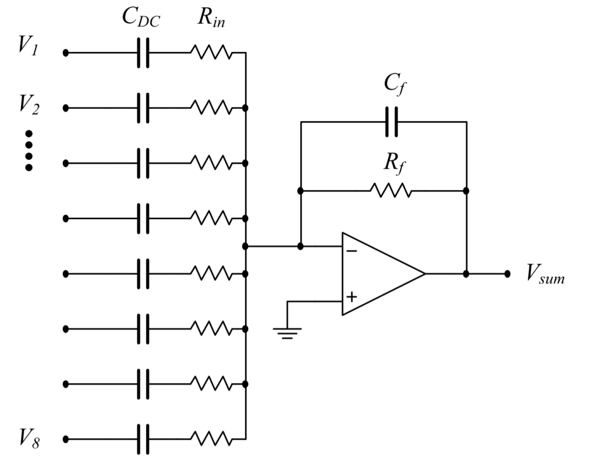

Current summer¶
A current summer amplifier is required to efficiently sample the current in each of the emitter coil PCBs. The composite signal is demodulated in an identical manner to the sensor signal. Data regarding the phases of the signals are extracted to provide information regarding the orientation of the sensor. This is used by the position and orientation algorithm (P&O). Without this, the sign of the \(n_A\) vector cannot be determined. (i.e. Two solutions exist for the orientation angle, \(\theta\) and \(\theta +\pi\) The phase information decides which orientation is valid). The circuit schematic of the summer circuit is shown below
{kind=link}
\(V_1\) to \(V_8\) represent the current-sense voltage signals from each emitter coil. These voltage signals are generated from the high-speed amplifier shown in section 2a. Capacitors \(C_{DC}\) block any DC bias from being amplified. Resistors \(R_{in}\) set the gain of the amplifier in conjunction with \(R_f\). Both \(R_f\) and \(C_f\) also form a low-pass filter to block any high frequency noise from entering amplifier. A single TL082 operational amplifier (datasheet 1 ) is used in the Anser system, although this particular model is not required. The resulting output voltage \(V_{sum}\) is given by:
The precision of this circuit not vital for accurate system operation. The purpose of \(V_{sum}\) is to provide the phase information of the coil current. i.e. magnitudes are not important. The amplifier gain should be chosen such that it can be accurately sampled by the data acquisition system (DAQ).